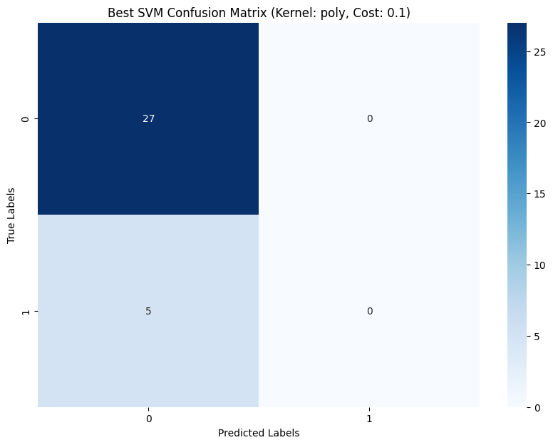
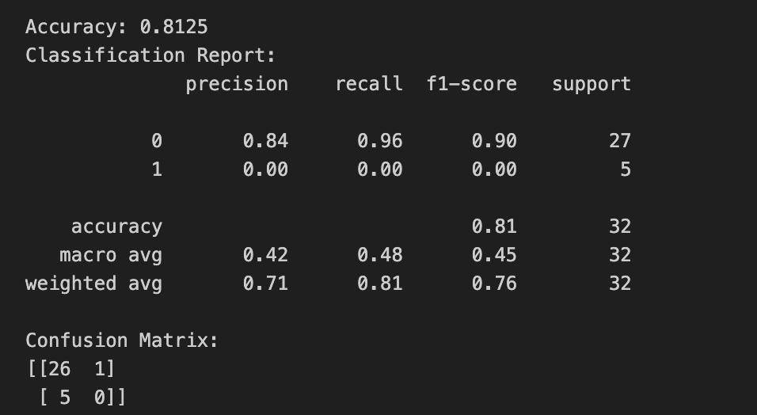

Overview
Support Vector Machines (SVMs) offer a powerful and versatile way of modeling complex datasets, particularly when the goal is classification or regression. Here’s a deeper look into how SVMs can be utilized for different topic goals:
SVM for Binary Classification:
If your topic involves a binary outcome, such as predicting whether a financial transaction is fraudulent or not, SVMs can be particularly effective. The model will classify transactions based on the features provided, learning from the training data to distinguish between the two classes. By using a non-linear kernel, SVM can handle complex, non-linear relationships between features.
SVM for Multiclass Classification:
For topics with more than two categories, such as classifying types of customer feedback into categories like 'positive', 'negative', or 'neutral', SVMs can be extended to handle multiple classes natively or by using strategies like one-vs-rest (OvR) or one-vs-one (OvO) approaches.
SVM for Regression (SVR):
For predictive analytics within your topic, such as forecasting sales or estimating real estate prices, Support Vector Regression can be utilized. The principle remains the same, but instead of finding the optimal hyperplane for classification, SVR tries to fit the best line within a threshold error margin.
Hyperparameters in SVMs:
- C (Regularization): The C parameter controls the trade-off between achieving a low error on the training data and minimizing the norm of the weights. A low C makes the decision surface smooth, while a high C aims at classifying all training examples correctly by giving the model freedom to select more samples as support vectors.
- Kernel: The choice of kernel (linear, polynomial, RBF, sigmoid) is crucial and depends on the data. Kernel parameters like the degree of the polynomial and the gamma value in the RBF kernel need careful tuning.
- Gamma: In non-linear kernels, gamma defines how far the influence of a single training example reaches. Low values mean ‘far’ and high values mean ‘close’. The gamma parameter can be seen as the inverse of the radius of influence of samples selected by the model as support vectors.
Advantages of SVMs:
- Effectiveness: SVMs are effective in high-dimensional spaces, even in cases where the number of dimensions exceeds the number of samples.
- Versatility: The kernel trick is a real strength of SVM, making it capable of separating data in complex ways.
- Robustness: SVMs are relatively robust against overfitting, especially in high-dimensional space.
Limitations of SVMs:
- Scalability: For large datasets, the computational demands of using SVM can be very high. This is due to the complexity of solving the quadratic programming problem to find the support vectors.
- Kernel Choice: Selecting the appropriate kernel and tuning its parameters can be challenging. The wrong choice can lead to an overfitting model.
Using SVMs for Your Topic: Given these characteristics, applying SVMs to your topic would involve understanding your data, preprocessing, model training and selection, interpretation of results, and operationalizing the model to make predictions or inform decisions that pertain to your topic goals.
Data Preparation
Supervised learning models like Support Vector Machines (SVMs) operate on a fundamental premise: they require labeled data to learn. This means every data point in the training set must be associated with a correct answer or outcome, known as a label. The model uses this labeled dataset to learn the relationship between the features (independent variables) and the label (dependent variable).
Data Requirements for SVMs:
- Numeric Data: SVMs require that input features are numeric because they perform calculations with the feature values. If you have categorical data, you need to convert it into a numerical format through encoding techniques such as one-hot encoding or label encoding.
- Scaled Features: It's also crucial for SVMs that the feature data is scaled. This is because SVMs find a hyperplane to separate different classes and are sensitive to the scales of the features. Differences in scales across features can lead to a bias toward features with larger scales.
- Labeled Data: As a supervised algorithm, SVMs can only be trained on data that has been labeled. Each instance in the training set must include a feature vector and a corresponding label.
Creating Training and Testing Sets:
To build an SVM model, you follow these steps:
- Split the Data: Divide your labeled dataset into two parts: a training set and a testing set.
- The training set is used to train the model. It learns the patterns in this data.
- The testing set is used to evaluate the model's performance. It's essential that this data was not seen by the model during training to give an unbiased evaluation of its predictive power.
Disjoint Sets: The training and testing sets must be disjoint, meaning they should not share any data points. This prevents the model from simply memorizing the data (a problem called overfitting) and ensures that the performance metrics you obtain reflect the model's ability to generalize to new data.
Use of Labeled Data: Only labeled data can be used in this process because the model needs to know the actual outcomes to learn effectively. In an SVM context, the labels are used to find the optimal separating hyperplane.
Here is a visual representation of the data we plan to use. Also, insights on how the Training and Testing sets were created and maintained disjoint for unbiased evaluation are discussed here.

Results
The results from your Support Vector Machine (SVM) with a polynomial kernel and a cost parameter of 0.1 indicate that the classifier is performing well for the majority class (class 0), but it is not successful in classifying the minority class (class 1). This is a common scenario in datasets with a class imbalance.
Confusion Matrix Interpretation:
- True Negatives (TN): The model predicted all 27 instances of class 0 correctly.
- False Negatives (FN): All 5 instances of class 1 were incorrectly classified as class 0.
- There were no True Positives (TP) or False Positives (FP), indicating the model never predicted class 1.
Classification Report Insights:
- Precision for Class 0: The model has a high precision of 84% for the majority class. It is correctly identifying the negative class but at the cost of not recognizing the positive class.
- Recall for Class 0: The recall is 100%, indicating that all actual negative instances were identified correctly.
- Class 1 Metrics: The precision, recall, and F1-score for the minority class are 0. This tells us the model could not identify any of the instances from the minority class, which is a problem if predicting this class is important.
Accuracy: The overall accuracy is 84.375%, but this metric is misleading due to the imbalanced nature of the dataset. The model's apparent "success" is mostly due to its performance on the more prevalent negative class.
Model Implications:
- Impact of Imbalance: The model's inability to correctly predict instances of the minority class might severely limit its usefulness for applications where correctly identifying the positive class is crucial.
- Potential Bias: The SVM's decision function seems to be biased towards the negative class, possibly because the penalty for misclassifying positive instances (set by the cost parameter) isn't high enough to encourage the model to take on more risk in classifying instances as the positive class.
- Kernel Suitability: While the polynomial kernel might allow for a more flexible decision boundary than a linear kernel, it may not be capturing the complexity necessary to distinguish between classes. Adjusting the degree of the polynomial or trying different kernels could yield different results.
Recommendations for Improvement:
- Cost Adjustment: Increasing the cost parameter may help the model pay more attention to the minority class by penalizing misclassifications more severely.
- Resampling Techniques: Employing resampling techniques such as SMOTE to balance the classes or adjusting class weights may improve the model's ability to identify the minority class.
- Kernel Exploration: Trying other kernels, such as the radial basis function (RBF) kernel, which can handle more complex non-linear data distributions, could lead to better performance.
- Cross-Validation: Using cross-validation with different kernel and cost combinations could help find the most effective model settings for your dataset.
Visualization: The visualization of the confusion matrix clearly illustrates the model's behavior, where the darker square on the top left indicates the correctly predicted instances of the negative class, and the lighter square on the bottom left indicates the missed positive instances.
Conclusion: The SVM with a polynomial kernel and cost of 0.1 is not adequately equipped to handle the minority class in this dataset. The next steps should involve experimenting with model parameters, including kernel functions and cost values, and implementing strategies to address the class imbalance to enhance the model's predictive capabilities for the minority class.

